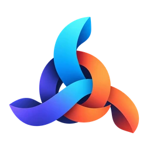
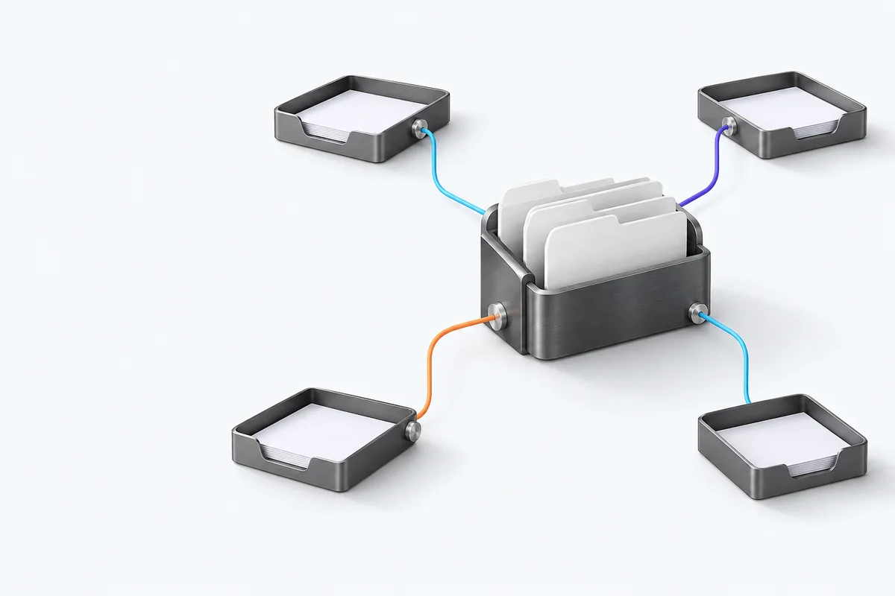
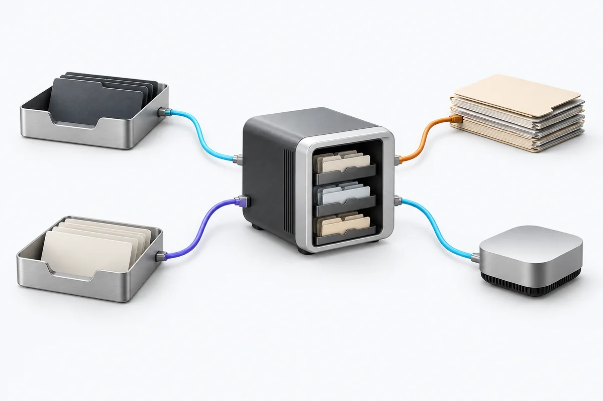

Bring skills in
Find skills on skills.sh, inspect a GitHub repository, or import a folder, URL, ZIP, or share bundle.

SkillsDockKeep your AI skills together on your computer. Send each one to the tools and projects where you need it—without maintaining a copy in every folder.

One local collection gives every tool a reliable source. Add skills from the places you already find them, then choose where each one belongs.
Find skills on skills.sh, inspect a GitHub repository, or import a folder, URL, ZIP, or share bundle.
Search by name, description, tags, repository, or scope. See each skill’s enabled tools at a glance.
Use file copies or symbolic links. Add a custom tool by pointing SkillsDock to its skills directory.
Keep the original organized in your library. SkillsDock handles the delivery paths for the tools you select.
Skills live locally in ~/.skilldock/skills/. Track their source, tags, version, and scope together.
Send a skill globally or connect it to one or more registered projects, then pick its destination tools.
Check upstream versions and update from one place instead of hunting down scattered copies.
No account and no cloud database. Your library, settings, and database stay on your computer. Project-scoped skills can be shared across the projects you register.
Read about privacy
Connects to the tools you use